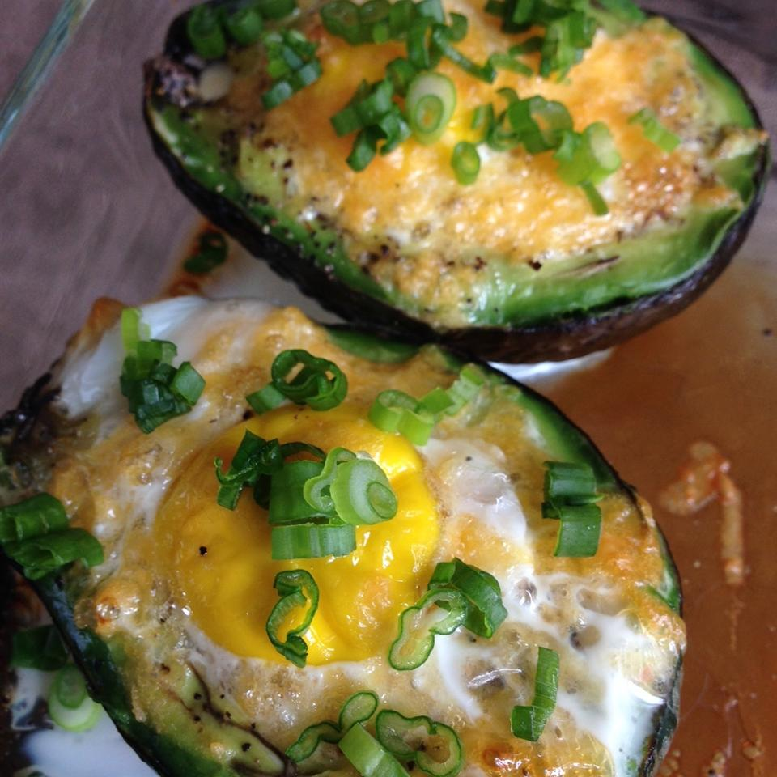

Avocado Baked Eggs

Avocado Baked Eggs
I had these clever breakfast treats at a brunch gathering. They are easy to make for just two people or for a
crowd. You can double or triple this recipe for a crowd. I use a muffin tin to hold each avocado half if I am
making several of them
Ingredients
- 1 avocado, halved and pitted
- 2 eggs
- salt and ground black pepper to taste
- 1 pinch cayenne pepper
- ¼ cup crumbled cooked bacon
- 1 tablespoon chopped fresh chives
Steps
- Preheat oven to 425 degrees F (220 degrees C).
- Place each avocado half in a ramekin. Crack 1 egg into each avocado half; season with salt, black pepper,
and cayenne pepper. Place ramekins on a baking sheet.
- Bake in the preheated oven until entire egg is cooked through, about 15 minutes. Sprinkle each avocado with
bacon and chives.